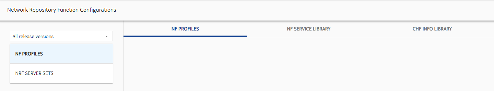

This section provides information about the parameters available for Network Repository Function (NRF) configuration. For details about how NRF works in NCC, refer to section NF and NRF functionality.
Configuration
- In the SM GUI click Go to New Launcher.You can also reach to the Converged Charging screen directly using the URL
 Note:
Note:https://<IP>:<Port>/ncc, where<IP>and<Port>are, respectively, the IP address and port of your NCC application. - Go to Connectivity → ≡ → Network
Repository Function. The following page appears.Figure: NRF Configuration 
Click NF PROFILES tab and then select a tab you need to work on from one of the following options in the Network Repository Function window to configure the attributes and make associations:
Click NF DISCOVERY and configure the NF Discovery parameters described in NF Discovery.
Supported NRF versions
- All release versions
- Rel 15.3.0
- Rel 16.6.0
 Notice:
Notice:NF Profiles
In the NF PROFILES tab, click + to create a new NF Profile.
The following table describe the NF Profile attributes.
| Parameter | Options | Description | Mandatory /Optional | |
|---|---|---|---|---|
| Name | String |
This is an alphanumeric id field that allows operators to uniquely identify the created NFProfiles . Unlike nfInstanceId (which has to follow UUID pattern), this id field has no such restriction, thereby allowing user friendly names to be associated with NFProfiles. This is a Mandatory field and must be unique for each NFProfile. |
Mandatory | |
| Release version | Drop-down list | NRF Release version for which this entity need to be created.
Note: |
Mandatory | |
| NF Instance | String | Unique identity of the NF Instance. Note: |
Mandatory | |
| NF instance name | String | Human readable name of the NF Instance.Note: |
Optional | |
| NF Type | Drop-down list | Type of network function. | Mandatory | |
| NF service list (Optional) | Drop-down | A list of NFService IDs with unique alphanumeric name to identify
the referenced NFService.
|
Optional | |
| Latest load time stamp from NF Instance | DateTime | It indicates the point in time in which the latest load
information (sent by the NF in the load attribute
of the NF Profile) was generated at the NF Instance. Note: |
Optional | |
| NF Status | Drop-down list | Status of the NF Service instance. Valid values: REGISTERED, SUSPENDED, UNDISCOVERABLE |
Mandatory | |
| Referenced NRF server sets | - | A list of NRF Server Set IDs, which are unique alphanumeric name
to identify the referenced NRF Server Set. Only the entities that have the same release version (15_3_0 or 16_6_0) can be provided/are available for selection. |
Optional | |
| Addressing parameters | Drop-down list | It has the following options:
|
Mandatory | |
| FQDN | String (FQDN) | FQDN of the Network Function. If the application preference
NRF: Enable v15.6 Support is set to
true, and URI scheme for NF Service is
https, then FQDN validation is applied in
the following scenarios:
If the NF Profile is created when the flag is false, and the validation is to be enforced, then the NF Profile must be updated. |
Optional | |
| IPV4 Addresses | List | Click +ROW to add one or more IPv4 addresses of the Network Function. | Optional | |
| IPV6 Addresses | List | Click +ROW to add one or more IPv6 addresses of the Network Function. | Optional | |
| NF server & CHF
infoNote: |
||||
| NF service list (Optional) | - | A list of NFService IDs with unique alphanumeric name to identify
the referenced NFService.
|
Optional | |
| CHF Info | Drop-down | ID of CHFInfo entity associated with this
NFProfile. Only the entities that have the same release version (15_3_0 or 16_6_0) can be provided/are available for selection. |
Optional | |
| CHF info list (Optional) | Drop-down | List of referenced CHFInfo IDs (that are configured for NRF
version 16_6_0). Only the entities that have the same release version (15_3_0 or 16_6_0) can be provided/are available for selection. Note: |
Optional | |
| Click +PARAMETERS and select any of the following parameters to be added. | ||||
| Association setting | Check box | When it is selected, all the parameters are selected at once. | Optional | |
| PLMN List | List |
PLMN(s) of the Network Function. This parameter is present if this information is available for the NF. If not provided, PLMN ID(s) of the PLMN of the NRF are assumed for the NF. |
Optional | |
| MCC | MCC of the PLMN. | Required | ||
| MNC | MCC of the PLMN. | Required | ||
| Per PLMN SNSSAI List |
List |
This parameter may be included when the list of S-NSSAIs
supported by the NF for each PLMN it is supporting is different.
When present, this IE shall include the SNSSAIs supported by the
Network Function for each PLMN supported by the Network Function.
When present, this IE shall override sNssais IE. If the
perPlmnSnssaiList attribute is provided in at least one NF Service,
the S-NSSAIs supported per PLMN in the NF Profile shall be the set
or a superset of the perPlmnSnssaiList of the NFService(s).
|
Optional | |
| MCC | MCC of the PLMN. | Required | ||
| MNC | MNC of the PLMN. | Required | ||
| NID | NID of the PLMN. | Optional | ||
| SNSSAI List |
For each SNSSAI added, provide the following:
|
|||
| Allowed PLMNs | List |
PLMNs allowed to access the NF instance. If not provided, any PLMN is allowed to access the NF. |
Optional | |
| MCC | MCC of the PLMN. | Required | ||
| MNC | MNC of the PLMN. | Required | ||
| Default Notification Subscriptions | List | Notification endpoints for different notification types. | Optional | |
| Notification Type | Drop-down list |
Type of notification for which the corresponding callback URI is provided. |
Required | |
| Callback URI | String | The callback URI. | Required | |
| N1 Message Class | String |
Identifies the class of N1 messages to be notified. It is needed if notification type is N1_MESSAGES. |
Conditional | |
| N2 Information Class | Drop-down list |
Identifies the class of N2 messages to be notified. It is needed if notification type is N2_MESSAGES. |
Conditional | |
| NSI List | List |
Add one or more NSIs to be served by the NF. |
Optional | |
| NSI | String | NSI identities of the Network Function. If not provided, the NF can serve any NSI. | Optional | |
| Allowed NF Domains | List |
Pattern (regular expression according to the ECMA-262 dialect [8]) representing the NF domain names allowed to access the NF instance. If not provided, any NF domain is allowed to access the NF. This is a plain string field with no validations. This field can accept domain name patterns. |
Optional | |
| NF Set ID List | List of NF Set IDs. At most one NF Set ID must be indicated per
PLMN of the NF. This information is present if available.
|
Optional | ||
| Allowed NSSAIs | List |
S-NSSAI of the allowed slices to access the service instance. The absence of this attribute indicates that any NF domain is allowed to access the service instance.
|
Optional | |
| SST | SST for the NSSAI. | Required | ||
| SD | SD for the NSSAI. | Optional | ||
| Wild Card SD | Indicate whether wild card is to be supported for SD value. | Optional | ||
| SD Ranges | List | Add one or more ranges for the SD value, if needed. | Optional | |
| SNSSAI List | List | S-NSSAIs of the Network Function. If not provided, and if the
perPlmnSnssaiList attribute is not present,
the NF can serve any S-NSSAI. If present, this IE represents the list of S-NSSAIs supported in all the PLMNs listed in the plmnList IE. If the sNSSAIs attribute is provided in at least one NF Service, the S-NSSAIs supported by the NF Profile shall be the set or a superset of the SNSSAIs of the NFService(s).
|
Optional | |
| Allowed SNPNs | List | SNPNs allowed to access the NF instance. If this attribute is
present in the NFService and in the NF profile, the attribute from
the NFService shall prevail. The absence of this attribute in both
the NFService and in the NF profile indicates that no SNPN, other
than the SNPN(s) registered in the snpnList attribute of the NF
Profile, is allowed to access the service instance. Note: |
Optional | |
| MCC | MCC of the SNPN. | Required | ||
| MNC | MNC of the SNPN. | Required | ||
| NID | NID of the SNPN. | Optional | ||
| SNPN List | SNPN(s) of the network function. This IE is present if the NF
pertains to one or more SNPNs.Note: |
Optional | ||
| MCC | MCC of the SNPN. | Required | ||
| MNC | MNC of the SNPN. | Required | ||
| NID | NID of the SNPN. | Optional | ||
| SCP Domains | When present, this IE carries the list of SCP domains the SCP
belongs to, or the SCP domain the NF (other than SCP) belongs
to.Note: |
Optional | ||
| Serving Scope | The served area(s) of the NF instance. The absence of this
attribute does not imply that the NF instance can serve every area
in the PLMN.Note: |
Optional | ||
| Association | ||||
| Inter PLMN FQDN | String (FQDN) | If the NF is discoverable by other NFs in a different PLMN, then an FQDN used for inter-PLMN routing. | Mandatory | |
| Locality | String | Operator defined information about the location of the NF instance (for example, geographic location, data center). | Mandatory | |
| Allowed NF Types | List |
Type of the NFs allowed to access the NF instance. If not provided, any NF type is allowed to access the NF. |
Mandatory | |
| NF Service Persistence | Check box |
If present, and set to true, it indicates that the different service instances of a same NF Service in this NF instance, supporting a same API version, are capable to persist their resource state in shared storage and therefore these resources are available after a new NF service instance supporting the same API version is selected by an NF Service Consumer. Otherwise, it indicates that the NF Service Instances of a same NF Service are not capable to share resource state inside the NF Instance. |
Optional | |
| NF Profile Changes Support | Check box |
NF Profile changes support indicator. This IE may be present in the NFRegister or NFUpdate (NF Profile Complete Replacement) request and is absent in the response.
|
Optional | |
| lcHSupportInd | Check box | This parameter indicates whether NF supports load control based
on LCI Header.
Note: |
Optional | |
| olcHSupportInd | Check box | This parameter indicates whether the NF supports Overload Control
based on OCI Header (see clause 6.4 of 3GPP TS 29.500 [4]).
Note: |
Optional | |
| Heart beat timer | Integer |
Time in seconds expected between two consecutive heartbeat messages from an NF Instance to the NRF. It is included in the registration request. When present in the request it contains the heartbeat time proposed by the NF service consumer. It is included in responses from NRF to registration requests (PUT) or in NF profile updates (PUT). If the proposed heartbeat time is acceptable by the NRF based on the local configuration, it uses the same value as in the registration request; otherwise the NRF overrides the value using a pre-configured value. |
Mandatory | |
| Priority | Integer |
Priority (relative to other services of the same type) in the range of 0-65535, to be used for NF Service selection; lower values indicate a higher priority. |
Mandatory | |
| Capacity | Integer |
Static capacity information in the range of 0-65535, expressed as a weight relative to other services of the same type. |
Mandatory | |
| Load | Integer | Dynamic load information, ranged from 0 to 100, indicates the current load percentage of the NF. | Mandatory | |
| Recovery Time | DateTime |
Timestamp when the NF was (re)started. NCC does not set this field automatically. The pattern of date time is yyyy-MM-dd'T'HH:mm:ssZZZ For example: 2019-05-02T21:29:46+0530 |
Mandatory | |
NF Service Library
In the NF SERVICE LIBRARY window, click + (at the bottom right corner) to create a new NF Service.
The following table describes NF Service attributes.
| Attribute name | Data type | Description | Mandatory /Optional | |
|---|---|---|---|---|
| Name | String | Alphanumeric Id of the service instance within a given NF Instance. This allows a user friendly name to be given to an NF Service entity for easy identification. | Mandatory | |
| Release version | Drop-down list | NRF release version for which this entity is to be created:
Note: |
Mandatory | |
| Service instance id | String | Unique ID of the service instance within a given NF Instance. | Mandatory | |
| Service name |
Drop-down list |
Name of the service instance. Valid values are:
|
Mandatory | |
| Scheme |
Drop-down list |
The URI scheme. Valid values are http and
https. If the URI scheme for NF Service is https, then FQDN must be provided either in NF Service, or all its associated NF Profiles if:
|
Mandatory | |
| NF Service Status | Drop-down list | Status of the NF Service instance. Valid values: REGISTERED, SUSPENDED, UNDISCOVERABLE |
Mandatory | |
| Load Time Stamp | DateTime | It indicates time at which the latest load information (sent by
the NF in the load attribute of the NF Service)
was generated at the NF Service Instance. Note: |
Optional | |
| Vendor ID | Numeric (6 digits) | Vendor ID of the NF Service instance, according to the
IANA-assigned SMI Network Management Private Enterprise
Codes.Note: |
Optional | |
| Oauth2Required | Check box | It indicates whether the NF Service Instance requires
Oauth2-based authorization.Note: |
Optional | |
| Versions | List | The API versions supported by the NF Service and if available, the corresponding retirement date of the NF Service. The different array elements that has distinct unique values for API Versions in URI, and consequently, the values of API Full Version that have a unique first digit version number. | Mandatory | |
| API Versions In URI | String | Indicates the API version in the URI. Example: v1 |
Mandatory | |
| API Full Version | String | A unique version number, following a
MAJOR.MINOR.PATCH.DRAFT pattern, separated by
a ".". The first three fields are mandatory and contain unsigned
integers. During the development of an API (that is, before the freeze of a given 3GPP release), the optional fourth field is called DRAFT, and it has the format alpha-n, where n is an unsigned integer. Examples: 1.0.0, 2.0.0, 3.0.0, 4.0.0, 1.2.0, 2.2.0, 1.0.0.alpha-1, 1.1.0.alpha-1, 2.0.0.alpha-1, 1.2.0.alpha-2. |
Mandatory | |
| Expiry | Date-time | Expiry date of the NF Service. | Optional | |
| Association | ||||
| FQDN | String (FQDN) | Specifies the FQDN of the NF Service instance. The application
preference When this flag is true, and
the URI scheme for NF Service is If the NF Service is created
when this flag is false, and validation is to
be enforced, the NF Service must be updated.
Note: |
Optional | |
| Inter PLMN FQDN | String (FQDN) |
If the NF service needs to be discoverable by other NFs in a different PLMN, then an FQDN used for inter PLMN routing is registered with the NRF. |
Optional | |
| API prefix | String | Optional path segments construct the apiRoot variable of the different API URIs. | Optional | |
| Recovery time | DateTime |
Timestamp when the NF service was (re)started. The pattern of date time is yyyy-MM-dd'T'HH:mm:ssZZZ For example: 2019-05-02T21:29:46+0530 |
Optional | |
| Supported features | String | Supported features of the NF Service instance. | Optional | |
| Allowed NF types | List |
Select one or more types of the NFs allowed to access the service instance. The absence of this attribute indicates that any NF type is allowed to access the service instance. |
Optional | |
| Priority | Integer |
Priority (relative to other services of the same type) in the range of 0-65535, to be used for NF Service selection; lower values indicate a higher priority. |
Optional | |
| Capacity | Integer | Static capacity information in the range of 0-65535, expressed as a weight relative to other services of the same type. | Optional | |
| Load | Integer | Dynamic load information, ranged from 0 to 100, indicates the current load percentage of the NF Service. | Optional | |
| Click +PARAMETERS to add any of the following parameters. | ||||
| Association setting | Check box | When it is selected, all the parameters are selected at once. | Optional | |
| CHF service info | List | Specific data for a CHF service instance. | Optional | |
| Primary CHF service Instance | String | Specify the primary CHF service instance. | Optional | |
| Secondary CHF service instance | String | Specify the secondary CHF service instance. | Optional | |
| IP end points | List | IP addresses and port information of the Network Function (including IPv4 and/or IPv6 address) where the service is listening for incoming service requests. | Optional | |
| IPV4 address | String | IPV4 address of the Network Function. | Optional | |
| IPV6 address | String | IPV6 address of the Network Function. | Optional | |
| Transport | String | Transport protocol. | Optional | |
| Port | String | Port of the Network Function. | Optional | |
| Default Notification Subscriptions | List | Notification endpoints for different notification types. | Optional | |
| Notification type | Drop-down list |
Type of notification for which the corresponding callback URI is provided. |
Required | |
| Callback URI | String | The callback URI. | Required | |
| N1 message class | String |
If the notification type is N1_MESSAGES, this parameter is present and identifies the class of N1 messages to be notified. |
Conditional | |
| N2 information class | Drop-down list |
If the notification type is N2_INFORMATION, this parameter is present and identifies the class of N2 information to be notified. |
Conditional | |
| Allowed PLMNs | List |
PLMNs allowed to access the service instance. The absence of this attribute indicates that any PLMN is allowed to access the service instance. |
Optional | |
| MCC | MCC of the PLMN. | Required | ||
| MNC | MNC of the PLMN. | Required | ||
| Allowed NF Domains | List |
List of allowed NF domains. |
Optional | |
| Allowed NF Domain | String | Pattern (regular expression according to the ECMA-262 dialect [8]) representing the NF domain names allowed to access the service instance. | Optional | |
| Vendor Specific Feature | List | This parameter defines the list of vendor specific features.Note: |
Optional | |
| Feature name | String |
Represents a proprietary feature specific to a given vendor (for example, DATA_MANAGEMENT). |
Required | |
| Feature version | String | Version of the feature. | Required | |
| Allowed NSSAIs | List | S-NSSAI of the allowed slices to access the service instance. The
absence of this attribute indicates that any slice is allowed to
access the service instance. This attribute is not included in
profile change notifications to subscribed NFs.
|
Optional | |
| SST | String | SST for the NSSAI. | Required | |
| SD | String | SD for the NSSAI. | Optional | |
| Wild Card SD | Check box | Indicate whether wild card is to be supported for SD value. | Optional | |
| SD Ranges | List | Add one or more ranges for the SD value, if needed. | Optional | |
| Allowed SNPNS | List | SNPNs allowed to access the service instance. If this attribute
is present in the NFService and in the NF profile, the attribute
from the NFService prevails. Note: |
Optional | |
| MCC | MCC of the SNPN. | Required | ||
| MNC | MNC of the SNPN. | Required | ||
| NID | NID of the SNPN. | Optional | ||
| SNSSAI List | - | S-NSSAIs of the NF Service. This may be a subset of the S-NSSAIs
supported by the NF (see sNssais attribute in NFProfile). Note: |
Optional | |
| SST | String | SST for the NSSAI. | Required | |
| SD | String | SD for the NSSAI. | Optional | |
| Wild Card SD | Check box | Indicate whether wild card is to be supported for SD value. | Optional | |
| SD Ranges | List | Add one or more ranges for the SD value, if needed. | Optional | |
| Per PLMN SNSSAI List | - | S-NSSAIs of the NF Service per PLMN. This may be a subset of the
S-NSSAIs supported per PLMN by the NF (see perPlmnSnssaiList
attribute in NFProfile). Note: |
Optional | |
| PLMN ID | MCC | MCC of the PLMN. | Required | |
| MNC | MNC of the PLMN. | Required | ||
| NID | NID of the PLMN. | Optional | ||
| SNSSAI List | SST | String | SST for the NSSAI. | Required |
| SD | String | SD for the NSSAI. | Optional | |
| Wild Card SD | Check box | Indicate whether wild card is to be supported for SD value. | Optional | |
| SD Ranges | List | Add one or more ranges for the SD value, if needed. | Optional | |
| Allowed operations per NF type | List | This parameter is used to fill the VALUE of map
allowedOperationsPerNfType in NFService,
which is a map of allowed operations on resources for each type of
NF; the key of the map is the NF Type, and the value is an array of
scopes. The scopes shall be any of those defined in the API that
defines the current service (identified by the
serviceName attribute).Note: |
Optional | |
| Allowed operations per NF instance | List | This parameter is used to fill the VALUE of map
allowedOperationsPerNfInstance in NFService,
which is a map of allowed operations on resources for a given NF
Instance; the key of the map is the NF Instance Id, and the value is
an array of scopes. The scopes shall be any of those defined in the
API that defines the current service (identified by the
serviceName attribute).Note: |
Optional | |
| NF Service set ID list | List | Indicates the NF Service Set IDs. At most, one NF Service Set ID
is indicated per PLMN of the NF. Note: |
Optional | |
CHF Info Library
Once a CHF Info is attached to a registered NFProfile, the CHF Info cannot be deleted. When a CHF Info attached to a registered NFProfile is updated, the CHF Info logs an NFUpdate.
At least one of the following along with the id attribute is required to be able to save the CHF configuration:
-
GPSI Range
-
PLMN Range
-
SUPI Ranges
In the CHF INFO LIBRARY, click (+) to create a new CHF Info profile.
|
Attribute name |
Options |
Description |
Mandatory/Optional |
|---|---|---|---|
| Name | String |
Additional CHF Info arguments in the API. Disallow the new CHF Info creation when no attribute (except ID) is provided. |
Mandatory |
| Release version | Drop-down list | Indicates the NRF version.
Note: |
Mandatory |
| Ranges | Drop-down list | It has the following values:
|
Mandatory |
| Group ID | String | Identity of the CHF group that is served by the CHF instance.
If not provided, the CHF instance does not pertain to any CHF
group. Note: |
Optional |
| Supi ranges | List |
List of ranges of SUPIs served by the CHF instance. If not provided, then the CHF serves any SUPI. The attributes to configure Supi ranges are as follows:
|
Optional |
| PLMN ranges | List |
List of ranges of PLMNs (including the PLMN IDs of the CHF instance) served by the CHF instance. If not provided, then the CHF serves any PLMN. The attributes to configure PLMN ranges are as follows:
|
Optional |
| GPSI ranges | List |
List of ranges of GPSI served by the CHF instance. If not provided, then the CHF serves any GPSI. The attributes to configure GPSI ranges are as follows:
|
Optional |
Server Library
In the SERVER LIBRARY window, click (+) to create a new NRF Server.
The following table describes the attributes for NRF Server.| Attribute name | Data type | Description | Mandatory/ Optional |
|---|---|---|---|
| Name | String | Indicates the ID of the NRF server. | Mandatory |
| NRF API Root | String |
Indicates the URL that represents the NRF server. Using this URL,
NCC communicates with the NRF server.
Note: |
Mandatory |
| Communication Timeout (ms) | Integer | Indicates the communication time out timing between NCC and NRF server in millisecond. | Mandatory |
| Retry count‡ | Integer | Indicates the number of retries for registration and deregistration when NCC is unable to communicate with the NRF server during the first attempt. | Optional |
| Failed heartbeat threshold | Integer | Indicates the failed heartbeat threshold used to switch to
another NRF server (as the current heartbeat failure has reached the
threshold level). Note: |
Optional |
| Probe | |||
| Probe timer | Integer | Indicates the probe timer in seconds. It defines the interval between two probe requests between NCC and NRF server. | Mandatory |
| Probe success count | Integer | Indicates the number of consecutive probe success count that defines the NRF Server as stable. Minimum value of this parameter is 1. | Mandatory |
| Failure count† | Integer | An FQDN is declared out of service (OOS) when successive probe failures reach the value defined in this parameter. Minimum value of this parameter is 1. | Optional |
| FQDN-Probe NF Instance ID† | String | If this value is present, then this Instance ID is used by Probe. Example: 123e4567-e89b-12d3-a456-426614174000 | Optional |
| Additional success codes for switchback to primary† | String | Additional success codes for switchback to primary. This is
applicable only for primary NRF Server when FQDN Probe
Instance ID is not configured. Type a string and
press Enter to add a success code.
Multiple HTTP response codes are allowed (for example, 404, 500, 200). |
Optional |
| Auth type† |
Drop-down list |
Indicates the authentication type between NCC and NRF server. The value range is as follows:
|
Optional |
| Username | String | Indicates the username when any of the NRF server is present. | Conditional |
| Password | String | Indicates the password when any of NRF server is present. | Conditional |
| Access Token URI | String |
Indicates the access token URI when the OAuth is used for communication between NCC and NRF server. |
Conditional |
Note:- † - The parameter is applicable only if vFQDN resolution for NRF is enabled.
- ‡ - The parameter is NOT applicable if vFQDN resolution for NRF is enabled.
Refer to Configuration to know more about this parameter.
- Multiple NRF Servers are provisioned on a single NCC ME site.
- An NRF Server can be modified. However, the apiRoot of an NRF server is its identity, and is not allowed to be modified.
- The NRF Servers have to be grouped under the NRF Server Set.
- A given NRF Server can be deleted only when it has no reference in the NRF Server SET.
NRF Server Sets
NCC supports multiple parallel registration of a single CHF or CHF-ME to multiple NRF servers by allowing you to create Sets of NRF Server. This NRF Server Set has to be associated with the NF Profile.
In the NRF SERVER SETS window, click (+) to create a new NRF Server Set.
The following table describes the NRF Server Set attributes:
| Attribute | Data type | Description | Mandatory /Optional |
|---|---|---|---|
| NRF server set name | String | Indicates the ID of the NRF Server Set. | Mandatory |
| Release version | Drop-down list | Indicates the NRF version.
Note: |
Mandatory |
| Primary server | String | Only one of the NRF Servers can be chosen as the primary NRF Server. | Mandatory |
| Secondary servers | String | List of the NRF Servers to be associated with the NRF Server Set.
Note: |
Optional |
- A single NRF Server Set can have multiple NRF Servers, out of which one must be primary. The rest are considered secondary.
- A given NRF Server can be primary in only a single NRF Server Set. The same primary NRF Server in multiple NRF Server Sets is not allowed. However, a given NRF Server can be secondary in multiple NRF Server Sets.
- Multiple secondary NRFs can be defined for an NRF Server Set. The secondary NRFs are used when the primary NRF is out of service. They should be used in the alphabetical order.
- An NRF Server Set can be deleted only when it has no association or reference in the NF Profile. If an NRF Server Set is not referred by any NF Profile but contains a NRF Server, then deletion is allowed.
NF Discovery
In the NF Discovery window, click (+) to create a new NF Discovery.
| Attribute | Data type | Description | Mandatory /Optional |
|---|---|---|---|
| Name | String | Indicates the ID of NF Discovery. | Mandatory |
| NRF server set | Enum | Indicates the ID of the NRF Server Set. | Mandatory |
| Release version | Drop-down list | Indicates the NRF version.
Note: |
Optional |
| Target NF type | Enum | Indicates the NF type of the target NF being discovered. Following options are available for this parameter:
|
Mandatory |
| Services | Enum | An array of service names for which the NRF is queried to provide the list of NF profiles. The NRF returns the NF profiles that have at least one NF service matching the NF service names in this list. | Optional |
| Parameters | |||
| Preferred target NF location | String | Indicates the location of the target NF instance being discovered. | Optional |
| Target NF set ID | String | Indicates the target NF Set ID of the NF instances being discovered. | Optional |
| Returned NF profiles limit | Integer | The maximum number of NF profiles to be returned in the response. | Optional |
| Max payload size | Integer | Maximum payload size of the response, expressed in kilo octets. Maximum value: 2000 |
Optional |
| Max payload size ext | Integer | Maximum payload size of the response, expressed in kilo octets. | Optional |
| Target NF instance | String | Identity of the NF instance being discovered. | Optional |
| Target NF target FQDN | String | FQDN of the target NF instance being discovered. | Optional |
| DNN | String | Indicates the DNN for which NF services serving that DNN is discovered. | Optional |
| UE IPV4 domain | String | The IPv4 address domain of the UE for which BSF needs to be discovered. | Optional |
| UE IPV4 address | String | The IPv4 address of the UE for which BSF needs to be discovered. | Optional |
| UE IPV6 prefix | Enum | The IPv6 prefix of the UE for which BSF needs to be discovered. | Optional |
| Access type | Enum | Indicates the access type which is by the target Network Function (that is, SMF). It has the following options:
|
Conditional |
| Target NF service set ID | String | Indicates the target NF Service Set ID of the NF service instances being discovered. | Optional |
| Requester NF instance FQDN | String | NF instance FQDN of the Requester NF. | Optional |
| Requester features | String | Indicates the Nnrf_NFDiscovery features supported by the requester NF that is invoking the Nnrf_NFDiscovery service. | Conditional |
| Supported features | String | Indicates the features required to be supported by the target Network Function. | Optional |
| Preferred full PLMN | Checkbox | If it is enabled, then the NRF prefers NF profiles that can serve the full PLMN (that is, NF profile can serve any TAI in the PLMN). If an NF profile serving the full PLMN is not found, then the NRF returns other NF profiles. | Optional |
| V2X support IND | Checkbox | Indicates whether a PCF supporting V2X Policy/Parameter provisioning should be discovered.Note: |
Optional |
| VSMF support IND | Checkbox | Indicates that target SMF that supports V-SMF capability should be preferred.Note: |
Optional |
| PGW IND | Checkbox | Indicates whether a combined SMF/PGW-C or standalone SMF should be discovered. Note: |
Optional |
| PGW FQDN | String | Indicates the PGW FQDN which is received by the AMF from MME to find the combined SMF/PGW. Note: |
Optional |
| SUPI | String | Indicates the SUPI of the requester UE to search for an appropriate NF. SUPI is included if the target NF type is PCF.Note: |
Optional |
| GPSI | String | Indicates the GPSI of the requester UE to search for an appropriate NF. GPSI may be included if the target NF type is PCF.Note: |
Optional |
| Click +PARAMETERS to configure the following parameters. If Association setting flag is enabled, then all the following parameters are added. |
|||
| Target SNPN | Checkbox | This IE is included when NF services of a specific SNPN should be discovered. It Indicates the PLMN ID and NID of the target NF. |
Optional |
| TAI | Checkbox | Tracking Area Identity. | Optional |
| sNssais | Checkbox | If included, this IE contains the list of S-NSSAIs that are served by the NF Service Instances being discovered. The NRF returns the NF profiles/NF services of NF Service Instances that have at least one of the S-NSSAIs in this list. | Optional |
| Serving scope | Checkbox | If present, this attribute contains the list of areas that can be served by the NF instances to be discovered. The NRF returns the NF profiles of NFs which can serve all the areas requested in this query parameter. | Optional |
| SCP Domain List | Checkbox | If present, this IE contains the SCP domain that the target NF or SCP belongs to. The NRF returns NF or SCP profiles that belong to all the SCP domains provided in this list. | Optional |
| Required features | Checkbox | List of features required to be supported by the target Network Function, as defined by the supported features attribute in NF Service. | Optional |
| Requester sNSSAIS list | Checkbox | If included, this IE contains the list of S-NSSAI of the requester NF. If this IE is included in a service discovery in a different PLMN, the requester NF provides S-NSSAI values of the target PLMN, that correspond to the S-NSSAI values of the requester NF. | Optional |
| Requester PLMN specific SNSSAI list. | Checkbox | If included, this IE contains the list of S-NSSAI of the requester NF, for each of the PLMNs it supports. The NRF returns the NF profiles of NF Instances allowing to be discovered from at least one network slice identified by this IE, according to the "allowedNssais" and "allowedPlmns" attributes in the NF Profile and NF Service. | Optional |
| Requester SNPN list | Checkbox | This IE is included when the requester NF belongs to one or several SNPNs, and NF services of a specific SNPN should be discovered. | Optional |
| Requester PLMN list | Checkbox | This IE is included when NF services in a different PLMN should be discovered. If included, this IE contains the PLMN IDs of the requester NF. | Optional |
| Preferred TAI | Checkbox | If present, the NRF prefers the NF profiles that can serve the TAI. If no NF profile is found to be matching the TAI, then NRF returns the NF profiles not matching the TAI. | Optional |
| Preferred NF instances | Checkbox | If present, this IE contains a list of preferred candidate NF instance IDs. | Optional |
| PLMN specific SNSSAI list | Checkbox | This IE is included when NF services in a different PLMN, or NF services of specific PLMN ID in a same PLMN comprising of multiple PLMN IDs, should be discovered. If included, this IE contains the PLMN ID of the target NF. If more than one PLMN ID is included, then NFs from any PLMN ID present in the list matches the query parameter. | Optional |
| NSI list | Checkbox | If included, this IE contains the list of NSI IDs that are served by the services being discovered. | Optional |
| Notification type | Checkbox | If included, this IE contains the notification type of the default notification subscriptions that are registered in the NF Profile or NF Service of the NF Instances being discovered. The NF profiles returned by the NRF contain the registered default notification subscriptions, including the one corresponding to the notification-type parameter. | Optional |
| Target PLMN list | Checkbox | This IE shall be included when NF services in a different PLMN, or NF services of specific PLMN ID(s) in a same PLMN comprising multiple PLMN IDs, need to be discovered. When included, this IE shall contain the PLMN ID of the target NF. If more than one PLMN ID is included, NFs from any PLMN IDs present in the list matches the query parameter. | Optional |